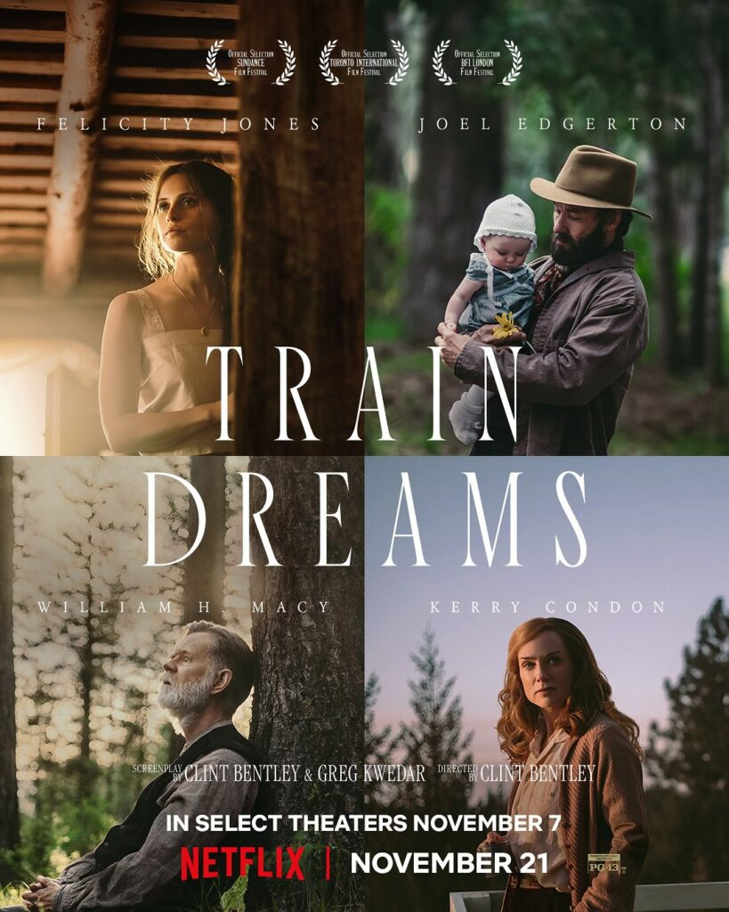
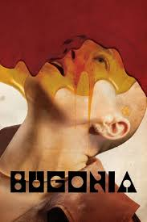

98th Annual Academy Awards
Melhor Roteiro Adaptado
Conheça os candidatos à Premiação do Oscar 2026 por Melhor Roteiro Adaptado.

Vencedor
Uma Batalha Após a Outra
Roteirista: Paul Thomas Anderson (supostamente inspirado em elementos de Vineland, de Thomas Pynchon).
A Adaptação: Embora não seja uma adaptação direta, o roteiro utiliza a estrutura densa e os temas políticos de Pynchon para criar uma trama contemporânea de perseguição e corrupção.
Destaque: A capacidade de Anderson de organizar o caos narrativo de Pynchon em uma linha de ação coerente, mantendo o humor excêntrico e os personagens multifacetados que são vitais para a obra de origem.

Hamnet: A Vida Antes de Hamlet
Roteirista: Chloé Zhao (baseado no romance de Maggie O'Farrell).
A Adaptação: Zhao transforma a prosa lírica e interna de O'Farrell em uma narrativa visualmente contemplativa. O roteiro foca na figura de Agnes, a esposa de Shakespeare, e como o luto pelo filho, Hamnet, torna-se a semente da peça mais famosa da história.
Destaque: A habilidade de adaptar um livro que lida muito com o "imaterial" e o folclore, mantendo o pé no chão com diálogos econômicos e poderosos.

Sonhos de Trem (Train Dreams)
Roteirista: Andrew Haigh (baseado na novela de Denis Johnson).
A Adaptação: Adaptar a escrita minimalista de Johnson é um desafio de "menos é mais". Haigh foca na jornada de Robert Grainier através de décadas de solidão e mudança no Oeste Americano.
Destaque: O roteiro consegue capturar a passagem do tempo e as perdas de uma vida inteira em uma estrutura concisa, transformando o "silêncio" das páginas em momentos cinematográficos profundos.

Frankenstein
Roteirista: Guillermo del Toro (baseado no romance de Mary Shelley).
A Adaptação: Del Toro volta diretamente à fonte original de 1818, afastando-se das versões caricatas de Hollywood. O roteiro foca na relação existencial e filosófica entre criador e criatura, tratando o monstro como um ser eloquente e trágico.
Destaque: A inclusão de temas sobre solidão e rejeição que são a marca registrada de Del Toro, dando uma voz nova a um texto centenário que ele passou décadas estudando.

Bugonia
Roteiristas: Will Tracy (baseado no roteiro original de Jang Joon-hwan para Save the Green Planet!).
A Adaptação: O desafio aqui foi ocidentalizar a bizarrice e o humor ácido do clássico cult coreano. Tracy (roteirista de O Menu) mantém o cinismo e a paranoia da trama original sobre um homem que sequestra uma executiva por acreditar que ela é uma alienígena.
Destaque: A transição do tom de comédia pastelão para o horror psicológico, mantendo a crítica social afiada sobre o isolamento e as teorias da conspiração modernas.